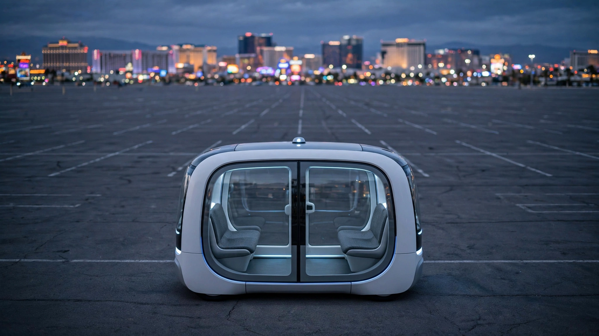

Amazon Got Permission to Charge for 2,500 Robotaxis. The Math Says It Needs 25,000.
NHTSA granted the first-ever commercial exemption for a purpose-built, steering-wheel-free robotaxi. But at 2,500 vehicles per year, Zoox's manufacturing economics are orders of magnitude from break-even, and every competitor building on modified production cars has a structural cost advantage that regulation can't fix.

On July 30, 2026, the National Highway Traffic Safety Administration did something it had never done before. It gave a company permission to sell rides in a vehicle that has no steering wheel, no brake pedals, no accelerator, and no rearview mirrors. That company was Zoox, the autonomous-vehicle subsidiary Amazon bought for $1.2 billion six years ago. The approval caps commercial deployment at 2,500 vehicles per year for two years, exempting Zoox from eight federal motor vehicle safety standards that assumed a human would be driving.
Half a million passengers have already ridden in a Zoox for free across Las Vegas and San Francisco. Now they'll start paying. CEO Aicha Evans called it "an important milestone for the future of autonomous mobility." Las Vegas goes first, next month. Other cities will follow as state permits come through.
It is a milestone, but it is also, if you run the numbers, an economic trap door that Amazon may not realize it's standing on.
The Vehicle Nobody Else Tried to Build
Every other company in the robotaxi business took the pragmatic route. Waymo bolts a $100,000 sensor stack onto a $75,000 Jaguar I-PACE. Tesla plans to manufacture a purpose-built Cybercab at its existing automotive plants, targeting a sub-$30,000 per-unit price. Pony.ai runs Toyota bZ4X sedans rolling off assembly lines at 150,000-plus units per year. All of them start with a vehicle that somebody else already knows how to mass-produce.
Zoox went the other direction entirely, building a symmetric, bidirectional pod with sliding doors, two inward-facing bench seats, a top speed of 75 mph, and a sensor array integrated into the bodywork from the first rivet. There is no front and no back, and the whole thing looks like a bread loaf designed by people who think about LiDAR occlusion patterns. Amazon builds it at Zoox's own manufacturing facility in Fremont, California.
The advantage is genuine: a vehicle designed from zero for autonomous operation doesn't carry the dead weight of a steering column, a dashboard, an instrument cluster, airbag mounting points for a driver's knees. Zoox's bidirectional architecture eliminates the need for U-turns, and the low, symmetric chassis distributes sensors with no blind spots created by a hood or a trunk.
The disadvantage is equally genuine, and it is denominated in dollars. Zoox's vehicle rolls off a line that produces 2,500 units per year. A conventional automaker considers anything below 100,000 annual units a rounding error.
What 2,500 Vehicles Actually Means
The automotive industry has a brutally simple relationship between volume and cost. At 100,000 to 200,000 units per year, tooling costs, supplier contracts, and labor overhead amortize into a reasonable per-unit number. Drop to 10,000 and per-unit costs roughly double. Drop to 2,500 and you're in low-volume supercar territory, where a factory exists to prove that a thing can be built, not that it should be built at that price.
Zoox does not disclose its per-vehicle manufacturing cost, and neither does Amazon, which buries Zoox spending inside an undifferentiated "Other" segment in its financial statements. But we can bracket it using publicly available competitor data.
Waymo's sixth-generation driver stack on a Jaguar I-PACE costs approximately $175,000 per vehicle, according to co-CEO Dmitri Dolgov. That's $75,000 for the car and $100,000 for the sensors and compute. Waymo buys the Jaguar from a factory producing hundreds of thousands of units per year. Its next-generation platform, built on Zeekr's RT chassis, is expected to bring total vehicle cost down to roughly $75,000 by leveraging Geely's high-volume manufacturing lines.
Zoox builds its vehicle, its sensor array, and its compute platform all in-house, at a facility producing 50 times fewer units than Waymo's cheapest supplier. A reasonable estimate, based on analogous low-volume EV manufacturing costs, puts the Zoox vehicle somewhere between $200,000 and $300,000 per unit. That makes it the most expensive robotaxi on the road by a wide margin, deployed at the lowest volume of any commercial fleet.
| Operator | Vehicle Platform | Est. Cost/Vehicle | Manufacturing Volume |
|---|---|---|---|
| Zoox (Amazon) | Purpose-built pod | $200K-$300K (est.) | 2,500/year (NHTSA cap) |
| Waymo (Alphabet) | Jaguar I-PACE (modified) | $175,000 | Supplier: 100K+/year |
| Waymo (next-gen) | Zeekr RT (modified) | ~$75,000 | Supplier: 200K+/year |
| Tesla | Cybercab (purpose-built) | <$30,000 (target) | Tesla production lines |
| Pony.ai | Toyota bZ4X (modified) | ~$65,000 | Supplier: 150K+/year |
The Revenue Ceiling Nobody Is Talking About
Waymo currently runs about 500,000 paid rides per week across ten U.S. cities, generating an estimated $350 million in annualized revenue, according to Sacra data from April 2026. Each Waymo averages roughly 23 rides per day at an average fare of $15 to $17.
Apply Waymo's utilization rate to Zoox's 2,500-vehicle cap. Twenty-three rides per vehicle per day, 365 days per year, at a $16 average fare. That's $336 million in maximum annual revenue. Push utilization to a generous 25 rides per day and you get $365 million. These are ceilings, not forecasts. Actual revenue in a launch market will be a fraction of the theoretical maximum because Zoox will spend months ramping up service hours, routes, and customer acquisition.
Now weigh that ceiling against costs. Capital expenditure for 2,500 vehicles at $200,000 each is $500 million in year one alone. Operating costs for remote monitoring, charging infrastructure, insurance, maintenance, and mapping add an estimated $50,000 to $80,000 per vehicle per year, based on the Bank of America framework published in November 2025. That's another $125 million to $200 million annually.
Total first-year cost: $625 million to $700 million. Maximum first-year revenue: probably $100 million to $150 million, being generous about ramp speed. None of it closes. Not in year one, not in year two, and not at 2,500 vehicles.
The Fleet Density Catch-22
Las Vegas has approximately 11,600 licensed taxi and transportation-network vehicles serving a metro area of 2.2 million residents and 42 million annual tourists. One vehicle for roughly every 190 permanent residents, before counting visitors. At 2,500 Zoox vehicles in Las Vegas, the ratio would be one per 880 residents. That's 4.6 times thinner coverage than the existing market.
Thin coverage means long wait times. Long wait times mean fewer riders per vehicle per day. Fewer riders per day means lower revenue. Lower revenue means slower fleet expansion. At 2,500 vehicles, the cap doesn't just limit scale; it limits the conditions under which scale becomes economically rational.
San Francisco presents an even sharper version of this problem, with roughly one active ride-hail vehicle per 200 residents at peak hours. Zoox still needs driverless deployment permits from both the California Public Utilities Commission and the Department of Motor Vehicles before it can charge there. When those permits arrive, Zoox will be allocating vehicles from the same 2,500-per-year budget between Las Vegas, San Francisco, and any other cities it targets.
Waymo solved this problem by not building its own cars. When it wanted to enter Austin, it ordered more Jaguars. When it wanted to scale Los Angeles, it called Zeekr. Zoox's fleet expansion rate is gated by its own factory's throughput, which is gated by the NHTSA exemption, which is gated by a regulatory process that took years to navigate once.
The Accident Denominator Problem
As of March 16, 2026, NHTSA had logged 123 accidents involving Zoox vehicles operating in autonomous mode. A small number resulted in injury or property damage. Zoox recalled software twice: once in May 2025 after an e-scooter collision, and once in December 2025 after 332 vehicles crossed the yellow center line 62 times over four months.
At roughly 500,000 passenger rides, that's one logged incident per 4,065 rides. Sounds bad until you examine the reporting threshold. NHTSA requires autonomous-vehicle operators to report any collision resulting in contact with another road user, property, or object. Human drivers are not held to anything close to that standard. By comparison, the national crash rate for passenger vehicles is 1.13 per million vehicle-miles traveled, according to NHTSA's own data, but that figure captures only police-reported crashes, which miss the vast majority of parking-lot scrapes, low-speed fender contacts, and minor sideswipes that never generate a report.
If we estimate Zoox rides at an average of five miles each, the fleet has covered approximately 2.5 million miles. That gives a raw incident rate of 49.2 per million VMT. But comparing this number to the human rate of 1.13 per million VMT is like comparing a company that reports every sneeze to an industry that only counts pneumonia. Those denominators are incompatible. Nobody knows the real human minor-incident rate because nobody tracks it.
What the data does establish is that Zoox's fatal-accident count is zero. Across 500,000 rides and an estimated 2.5 million miles, no one has died. The national rate is approximately 1.35 fatalities per 100 million VMT. Zoox's sample size is too small to draw statistical significance from this, but it's not nothing.
The Strongest Case for Zoox
Amazon doesn't need Zoox to be profitable at 2,500 vehicles. That sentence is worth sitting with.
Amazon Web Services lost money for years. Amazon Fresh lost money for years. Its Kindle lost money for years. Amazon's corporate DNA is built around subsidizing infrastructure plays until they reach a scale where marginal costs collapse and competitors can't follow. Jeff Bezos called it "your margin is my opportunity." Andy Jassy has continued the tradition with a $2 trillion market cap behind it.
The argument, if you're an Amazon strategist, goes like this: The 2,500-vehicle exemption is a stepping stone, not a destination. Prove safety at small scale. Accumulate millions of miles of commercial operation data. Feed that data back into vehicle design and manufacturing. When NHTSA publishes permanent AV performance standards, via the A2SCEND consortium it just announced, Zoox will have the longest continuous commercial operating record of any purpose-built AV in the country. The exemption cap lifts. Manufacturing scales. Per-unit costs fall. And the full-stack advantage, owning the vehicle, the software, the operations, and the customer relationship, creates margins that platform-dependent operators like Waymo can't match.
There is also the delivery angle. Amazon's last-mile logistics operation moves 5.9 billion packages annually in the United States. A bidirectional pod that navigates city streets autonomously at 75 mph is not just a passenger vehicle; it's a proof-of-concept for autonomous package delivery in dense urban corridors where Amazon's electric delivery vans still require human drivers earning $20 to $25 per hour.
None of this is crazy. All of it requires believing that the manufacturing-cost disadvantage is temporary rather than structural. That belief is the bet.
Why the Bet Might Not Pay
Two forces work against Zoox's long game. First, competitors are not standing still.
Waymo's next-generation Zeekr RT platform will bring its per-vehicle cost to roughly $75,000, less than half the current Jaguar setup and perhaps a third of Zoox's per-unit cost. Tesla, whatever you think of its timeline credibility, is aiming for a sub-$30,000 Cybercab manufactured at automotive scale. Pony.ai's seventh-generation robotaxi achieved monthly per-vehicle profitability in Shenzhen in March 2026 by cutting BOM costs 70 percent from the prior generation and designing for a 600,000-kilometer lifespan.
By the time Zoox reaches a volume where its purpose-built approach might achieve cost parity with modified production vehicles, the cost target will have moved. Any advantage of building your own car disappears if your competitors' cars are cheaper, and your competitors are getting cheaper faster than you can scale.
Second, purpose-built manufacturing has never worked at low automotive volumes without luxury pricing. Rimac builds 150 Neveras per year at $2.1 million each. The original Tesla Roadster launched at 2,500 units total across four years, priced at $109,000. No company has ever manufactured a sub-$100,000 vehicle at 2,500 units per year and broken even on the hardware. The economics of stamping, welding, painting, and assembling a bespoke vehicle simply do not amortize below a threshold that Zoox is currently 40 to 80 times under.
What This Means for the Robotaxi Industry
The Zoox exemption matters regardless of whether Zoox itself ever turns a profit. NHTSA's decision establishes that a vehicle without a steering wheel, brake pedals, or windshield wipers can be commercially deployed on American roads. That precedent unlocks the regulatory path for every future purpose-built AV, including Tesla's Cybercab and whatever China's fleet operators eventually submit for U.S. approval.
The $5 million A2SCEND consortium, announced alongside the Zoox exemption, will develop the first national performance standards for autonomous vehicles. When those standards exist, the current patchwork of state-by-state regulation, where Illinois has banned robotaxis entirely and Nevada issues permits, will begin to consolidate. The 2,500-vehicle cap becomes a historical footnote once permanent standards replace temporary exemptions.
Limitations
This analysis relies on estimated per-vehicle costs for Zoox, which neither Amazon nor Zoox disclose. The $200,000 to $300,000 range is based on analogous low-volume EV manufacturing; actual costs could be higher or lower. The accident-rate comparison between AVs and human drivers is methodologically imperfect because reporting thresholds differ categorically. Amazon's total post-acquisition investment in Zoox is unknown. Revenue projections assume Waymo's utilization rates transfer to Zoox's operating environment, which may not hold given differences in vehicle design, service area, and brand recognition.
The Bottom Line
Amazon's Zoox just won a race nobody else was running. It is the first company on Earth to receive government permission to charge money for rides in a vehicle that was never designed for a human to drive. That achievement is real and it is historic.
But winning a regulatory first and winning a market are different contests. At 2,500 vehicles per year, Zoox's manufacturing costs are structurally 2 to 4 times higher than competitors who modify production cars. Its revenue ceiling is capped at roughly $336 million before the fleet even starts to cover operating expenses. And its competitors are getting cheaper while Zoox hasn't yet proven it can get big.
What You Can Do
If you ride robotaxis in Las Vegas, try a Zoox when paid service launches next month. The bidirectional pod is a genuinely different transit experience from sitting in a driverless Jaguar. If you invest in Amazon, understand that Zoox is a long-duration infrastructure bet with no disclosed financials and a competitor landscape that's compressing costs faster than Zoox can scale. Watch the A2SCEND consortium's progress over the next three years. When it publishes draft performance standards, the 2,500 cap goes away, and the real economics of purpose-built versus modified robotaxis will finally be visible. That's when the market finds out whether Amazon built the future or just got permission to charge for a prototype.
Sources
- NHTSA press release: New AV Safety Standards & Zoox Robotaxi Exemption (July 30, 2026)
- Reuters: Amazon's Zoox wins first US approval for paid robotaxis without human controls (July 30, 2026)
- TechCrunch: Zoox clears final federal hurdle to launch paid robotaxi service (July 30, 2026)
- WSJ: Amazon's Zoox Gets Clearance to Start Paid Robotaxi Rides (July 30, 2026)
- Wikipedia: Zoox — NHTSA accident logs, 123 incidents as of March 16, 2026
- Morningstar/MarketWatch: Waymo vehicle cost ~$150K, Tesla Cybercab target <$30K (June 24, 2026)
- Sacra revenue data: Waymo annualized revenue ~$355M, average fare $15-$17 (April 18, 2026)
- Om Malik: Is Waymo Worth $126 Billion? — fleet size, vehicle cost, utilization analysis (Feb 12, 2026)
- Bank of America Global Research: "Robotaxi Economics: When Will the Math Work?" — per-mile breakeven analysis (November 5, 2025)
- Pony.ai press release: 7th-gen robotaxi achieves monthly unit profitability in Shenzhen (March 12, 2026)
- Carscoops: Zoox recall, 332 vehicles, 62 lane-crossing incidents (December 2025)
- Las Vegas Review-Journal: Zoox stalling incidents (July 2026)
- AutoTriad: Waymo and Cruise profitability analysis (2026)
- TechSlog: Year One of Level 4 Robotaxi Commercialization (May 2026)